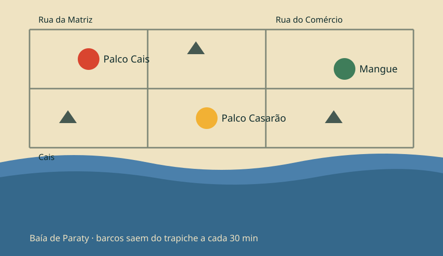

Onde é
Centro histórico de Paraty, Rio de Janeiro
Endereço
Cais de Paraty, Rua da Praia, s/n — Centro Histórico, Paraty, RJ, 23970-000. O portão de entrada fica no fim da Rua do Comércio, ao lado do trapiche dos barcos.
Horários
Abertura dos portões nos três dias
Shows nos três palcos, sem intervalo entre eles
Encerramento; as rodas do Mangue seguem até 2h no sábado

Os três palcos ficam dentro do mesmo quadrilátero de ruas de pedra. Do mais distante ao mais próximo dá cinco minutos a pé.
Como chegar
De carro, ônibus, barco ou a pé
De carro
Pela BR-101 (Rio–Santos). O centro histórico é fechado para carros: deixe o veículo no estacionamento da Praça do Chafariz, a 600 metros do portão, R$ 40 a diária.
De ônibus
A rodoviária de Paraty recebe linhas do Rio, de São Paulo e de Angra. São 15 minutos a pé até o cais, pela Avenida Roberto Silveira.
De barco
Nos três dias há traslado do trapiche da Ilha do Araújo e da Praia Grande, das 17h às 2h, a cada 30 minutos, R$ 15 por trecho.
Regras do festival
Revista na entrada, sem exceção
Pode entrar
- Garrafa de água vazia, de plástico ou metal
- Protetor solar e repelente
- Capa de chuva e guarda-chuva pequeno
- Cadeira dobrável, só na área de grama do Mangue
- Remédio de uso contínuo com receita
- Câmera fotográfica sem lente removível
Não pode entrar
- Bebida, comida e cooler
- Objeto de vidro de qualquer tipo
- Guarda-sol, barraca e mastro de bandeira
- Drone, fogos e apontador a laser
- Animais, exceto cão-guia com documentação
- Bicicleta e patinete dentro do perímetro
O chão do centro histórico é de pedra irregular e alaga com a maré alta. Use calçado fechado e firme. Há rota acessível sinalizada da Praça do Chafariz até o Palco Cais, com piso temporário e equipe de apoio.